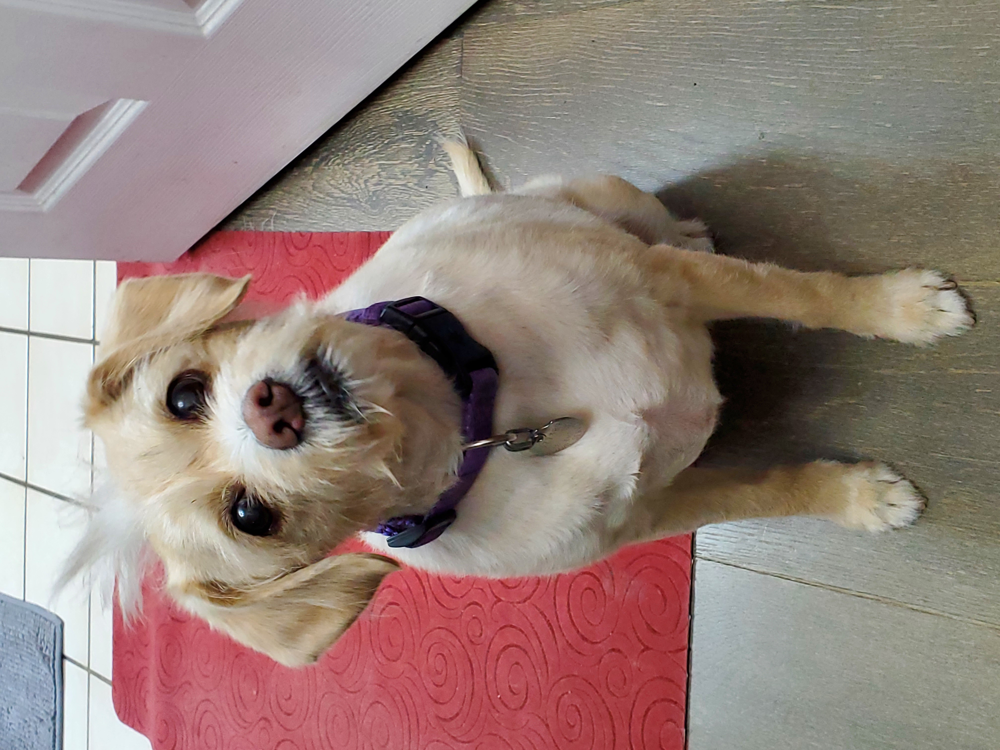

How to Prepare Food For My Dog's Meal
Cooking Ahead of Time
- Ingredients
- White Rice
- Brown Rice
- Peeled Baby Carrots
Steps
- Cooking Rice
-
In a microwave-safe bowl, add 1 cup of White Rice and 1 cup of Brown
Rice.
- Add 2 cups of water to bowl with rice.
-
Place the uncovered, microwave-safe bowl in the micowave and set the
timer to 11 minutes.
-
After cooking has finished, using heat-proof mitts to remove bowl,
place the bowl on a trivet on the counter.
- Using a tablespoon, stir the rice, then allow to cool.
- Cooking Carrots
- Place 'steam in the bag' carrots on a microwave-safe plate.
- Place plate in the microwave and set the timer to 4 minutes.
- After cooking has finished, use heat-proof mitts to remove the plate, and place on a trivet on the counter; split open the bag with a knife, and let it cool.
Serving Prepared Food
- Ingredients
- Prepared rice from above
- Prepared carrots from above
- Canned pumpkin
- Canned duck and potato dog food
- Kibble approved by vet

Serving Meal
- Make sure dog bowl is clean and ready for serving.
- Soak about 2 tablespoons of kibble, slightly covering with water, in a small bowl for a few minutes.
- Add about 2 teaspoons of rice to dog bowl.
- Add 1 teaspoon of pumpkin to the rice in the dog bowl.
- Slice up about 4 or 5 carrots, chopping up as small as reasonably possible, then place in the dog bowl.
- Stir the ingredients in the dog bowl.
- Add 2 teaspoons of the duck and potato dog food to the top of the food in the dog bowl.
- Place the food in the dog food bowl for the dog to eat.
- Make sure there is sufficient water in a bowl adjacent to the food bowl for the dog to be able to drink while eating.